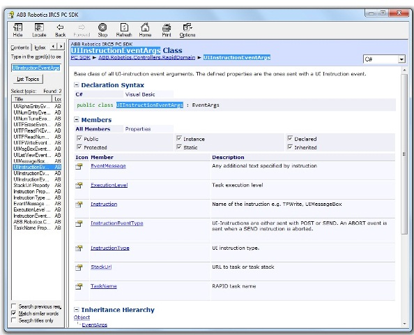
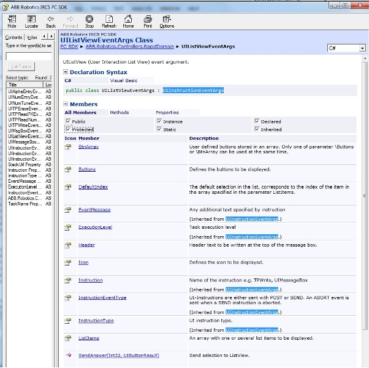

Enable operator response to RAPID UI-instructions from a PC
Remote operator dialog box
PC SDK supports operator dialog box to be launched on a PC instead of the FlexPendant when RAPID UI- and TP-instructions are executed. In this chapter this feature is referred to as Remote operator dialog. It enables an operator to give the feedback required by the RAPID program from a PC instead of using the FlexPendant.
Note
TP instructions can only be used with RobotWare 5.12 and later.
Supported RAPID instructions
The following RAPID instructions are supported:
UIInstructionType
The PC SDK UIInstructionType enumeration defines the different RAPID instructions listed above. For a description of each instruction type, see API Reference. The following is an example of such a description.
Example UIInstructionType.UIAlphaEntry:
| Member | Description |
|---|---|
| UIAlphaEntry | The UIAlphaEntry (User Interaction Alpha Entry) is used to let an operator communicate with the robot system via RAPID,by enabling him to enter a string from the FlexPendant or from a PC SDK application. After the operator has entered the text, it is transferred back to the RAPID program by calling UIAlphaEntryEventArgs.SendAnswer. |
Tip
For complete information about the usage in RAPID refer to RAPID Technical reference manual (accessible from RobotStudio).
Increased flexibility
Making use of the feature, the end-user of the robot system can choose whether to use the FlexPendant or the PC SDK application to answer a RAPID UI- or TP-instruction.
The FlexPendant will always show the operator dialog the usual way. If the operator responds from the PC the message on the FlexPendant will disappear.
Note
The dialog box of the PC SDK application should disappear if the operator chooses to respond from the FlexPendant. This is handled by the PC SDK programmer.
Basic approach
The basic procedure for implementing Remote operator dialog in a PC SDK application is shown below. The same approach is used internally by the FlexPendant when it launches its operator view.
| Step | Action |
|---|---|
| 1 | Set up a subscription to UIInstructionEvent. |
| 2 | In the event handler check the UIInstructionEventType from the event arguments. If Post or Send create an operator dialog by using the information provided by the event arguments. |
| 3 | To transfer the response of the end-user to the RAPID program call the SendAnswer method of the specialized UIInstructionEventArgs object. |
| 4 | Remove any existing operator dialog if you get a UIInstructionEvent of UIInstructionEventType.Abort. |
Note
The controller events are always received on a background thread and you need to enforce execution to the GUI thread by the use of Invoke before launching the operator dialog. For more information, see Controller events and threads.
UIInstructionEvent
To be notified when a UI-instruction event has occurred in the controller, you need to set up a subscription to
UIInstructionEvent. To do that you use the UIInstruction property of the Rapid class, like this:
Controller c = new Controller();
c.Rapid.UIInstruction.UIInstructionEvent +=
new UIInstructionEventHandler(OnUIInstructionEvent);
Tip
For a code example including an event handler see UIInstructionEvent in the API Reference.
UIInstruction event arguments
To create the dialog in accordance with the arguments of the RAPID instruction and to transfer the response of the operator back to the executing RAPID program, you can use the information of the event arguments.
UIInstructionEventArgs
The UIInstructionEventArgs object holds information about which RAPID task and which UI- or TP-instruction triggered
the event. The following picture shows all UIInstructionEventArgs members.

UIInstructionEventArgs is a base class of several specialized classes, one for each UI- and TP- instruction.
The specialized class holds the additional information needed to create the operator dialog, so type casting the
UIInstructionEventArgs object to the correct specialized type is necessary. To do that you first check the
InstructionType property, which you can see in the preceding image.
UIListViewEventArgs
As an example of a specialized type, the members of the UIListViewEventArgs class are shown below.
The Buttons and ListItems properties are of course crucial for creating the operator dialog.

UIInstructionEventType
An important property in the picture above is UIInstructionEventType. It is inherited from the base class and comes
with all UI- and TP- instruction events.
The following table shows the members of the UIInstructionEventType enumeration.
| Member | Description |
|---|---|
| Undefined | Undefined. Should not occur. |
| Post | Post event type, for example TPWrite, TPErase. When the event is of this type RAPID expects no response from the operator. |
| Send | Send event type, for example TPReadNum, UIListView. When the event is of this type the running RAPID program expects feedback from the operator before execution continuous. |
| Abort | When the controller gets a response from a client (the FlexPendant or a PC SDK application) it sends an event of Abort type. This tells all subscribing clients that the UI-Instruction has been aborted, closed or confirmed by the operator. When you get an event of this type you should remove any open operator dialog. |
Note
If the robot system has several RAPID tasks, it is necessary to keep track of which operator dialog belongs to which task,
and so on. A RAPID task can handle only one pending Send, and it is not guaranteed that an Abort event will always
follow a Send event. Therefore, if you receive a new Send event from the same task without a preceding Abort event,
you should remove the existing dialog and display the new one.
SendAnswer method
To transfer the response of the end-user back to the RAPID program, you can call the SendAnswer method.
See the image of the UIListViewEventArgs class above. SendAnswer is called with different arguments depending on the
RAPID instruction.
For example, if it is a UIAlphaEntry instruction you can send the string that the operator has entered as argument.
But if it is a UIListView instruction the SendAnswer method will look like this:
public void SendAnswer(int listItemIdx, UIButtonResult btnRes);
Note
This operation requires mastership of the RAPID domain. For more information, see Accessing the controller.